Jom Makcik is not compared against taxis. When an adult child needs to move a parent who cannot leave her wheelchair, the shortlist is built from anyone who says the word wheelchair, accessible, escort or companion near a Malaysian place name. Eleven operators were checked against their own live pages on 9 and 10 September 2026, every one captured, and the four with the most to teach were measured on the same throttled rig as the audit. Where a claim could not be verified it is listed in part 06 rather than promoted into a fact.
The IAQ and Tenthpin boards open with the client's own confirmations from the review meeting. This board has not had that meeting yet. So the top of it carries what the evidence confirms without her, and the four questions that will re-rank this board once she answers them on Friday 11 September.
Launched December 2025 in the Klang Valley with roughly 100 trained driver partners. Its own page limits it to a foldable wheelchair or crutches, and states that drivers are unable to leave their vehicles unattended. Those two sentences describe Jom Makcik's two products.
Service pages, a hospital transport page, an accessible tourism blog by state, syndicated on Medium. Its homepage headline is the search phrase itself. Weaker credentials than Jom Makcik, better findability than everyone.
Mobiliti publishes RM17 per wheelchair user one way. Little Fook publishes RM5 plus RM1.50 per kilometre. No commercial wheelchair van operator on this board publishes a fare. The companion services publish hourly rates instead.
Whether PERKESO and JKM are referral, funding or panel relationships. Whether Jom Makcik's own rates sit above or below Mobiliti's RM17 anchor. Whether weekend service exists in practice. Which hospitals actually refer today. Each answer moves at least one operator on the ranking below.
An operator can matter because it threatens the business, because it shows the target, or because it warns us. Both scores are Brand Method's own assessment from the live pages, not published data. Website score rates the site as a sales asset for winning a family's booking. Threat score rates the commercial risk to Jom Makcik in its four areas.
| # | Operator | Base | Tier | Why it ranks here |
|---|---|---|---|---|
| 1 | GrabAssist | Petaling Jaya, Klang Valley | Platform | The only entrant with an app, a brand every family already has, and 100 trained drivers. It will take the easy half of the market. It has published, in writing, that it cannot take the hard half. |
| 2 | Love On Wheels | Kuala Lumpur | Commercial WAV | The search rival. Hydraulic lift vans, seven states, 24/7 claimed, one tap WhatsApp, and a content programme no one else runs. Where a stranger's search ends up today. |
| 3 | Pearlcare Mobility | Petaling Jaya | Commercial WAV | The closest product match: lift vehicle plus a caregiver package, 24 by 7 stated, and the pickup mechanics published. Says more than Jom Makcik about a smaller operation. |
| 4 | Mobiliti | Petaling Jaya | Non profit | Sets the public price anchor at RM17 one way. Five lift vans, four working days notice. Not a commercial rival, but every family who has used it arrives with that number in their head. |
| 5 | Multicare Mobility | Klang Valley | Commercial WAV | Founded 2019, driver plus assistant on every job, three named reviews with towns. Thin site, but the one operator whose testimonials carry names. |
| 6 | Homage | Kuala Lumpur, five regions | Companion, no vehicle | Venture funded, app first, RM28 an hour. Sells the escort and tells the family to arrange a taxi. Competes for the same monthly budget and shows what a premium booking flow looks like. |
| 7 | Little Fook, Dual Blessing | Klang Valley | Charity | RM5 plus RM1.50 a kilometre, seated in the chair, three to seven days notice, no personal assistant. The second price anchor, and a warning about how cheap the floor is. |
| 8 | Seniora | Taiping, Penang, Johor Bahru | Companion with transport | Transport and companion in one, RM50 an hour in KL, minimum two hours. Publishes everything. Outside the four areas today, but the model is the closest to Jom Makcik's chaperone. |
| 9 | GPM Ambulance | Kuala Lumpur and Selangor | Ambulance with mobility | 24 hours, 7 days, price on distance. The fallback a hospital desk reaches for at 9pm. Owns the hours Jom Makcik does not. |
| 10 | Rapid Mobility | Prasarana, Klang Valley | Public | Hydraulic lift vans, door to door, nine named areas, phone booking, weekdays 8.30 to 5. Free or near free for the eligible. Shows why a private operator has to justify its price with dignity and time. |
| 11 | MBSA and council vans | Shah Alam | Public | One modified Hiace with a tail lift for residents. Background noise, listed for completeness. |
| Operator | Seated in own chair | Walks you in | Publishes a fare | Weekend | Notice | Content pages | Bahasa Melayu |
|---|---|---|---|---|---|---|---|
| Jom Makcik, today | Yes, AbiliCar | Yes, chaperone | No | Weekdays only, stated | 24 hours, in the app | One page | No |
| GrabAssist | No, foldable only | No, by policy | No | App hours | 75 minutes to 90 days | Grab's own | App |
| Love On Wheels | Yes, lift | Unstated | No | 24/7 claimed | Unstated | Blog, state pages | No |
| Pearlcare | Yes, lift | Caregiver package | No | 24 x 7 stated | Unstated | Service pages | No |
| Mobiliti | Yes, lift | Unstated | RM17 one way | Sat am, Sun by booking | 4 working daysAssociation site | No | |
| Multicare | Yes, specialised vehicle | Driver plus assistant | No | Unstated | Unstated | One page | No |
| Homage | No vehicle | Yes, escort | RM28 to 45 an hour | App | App | Full site | Partial |
| Little Fook | Yes, modified van | No, stated | RM5 + RM1.50/km | Sat to 1pm | 3 to 7 days | One page | No |
| Seniora | Assists wheelchair, vehicle unstated | Yes, companion | RM40 to 50 an hour | Sat by appointment | Service pages | No | |
| GPM Ambulance | Unstated | Unstated | On distance | 24/7 | Phone | Service pages | No |
| Rapid Mobility | Yes, hydraulic lift | Unstated | Not shown | Weekdays only | Phone | One page | Site is bilingual |
Screenshots, not descriptions, so the comparison is against the page a family actually meets. Scores are ours. The verdict under each is what the page does to a stranger in the first ten seconds.
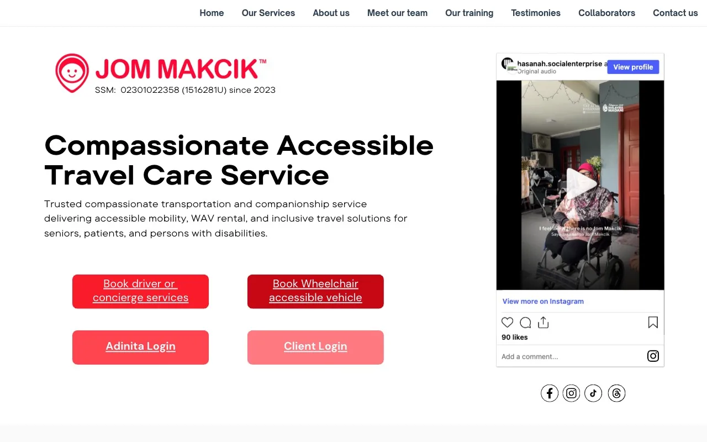
Why it is here. The board is measured against this. Four equal buttons, two of them logins, and a funder's Instagram embed as the main visual.
A Canva export. Zero headings, 53 images without alt text, 13 second main content on 4G. The strongest credential set on the board, invisible.
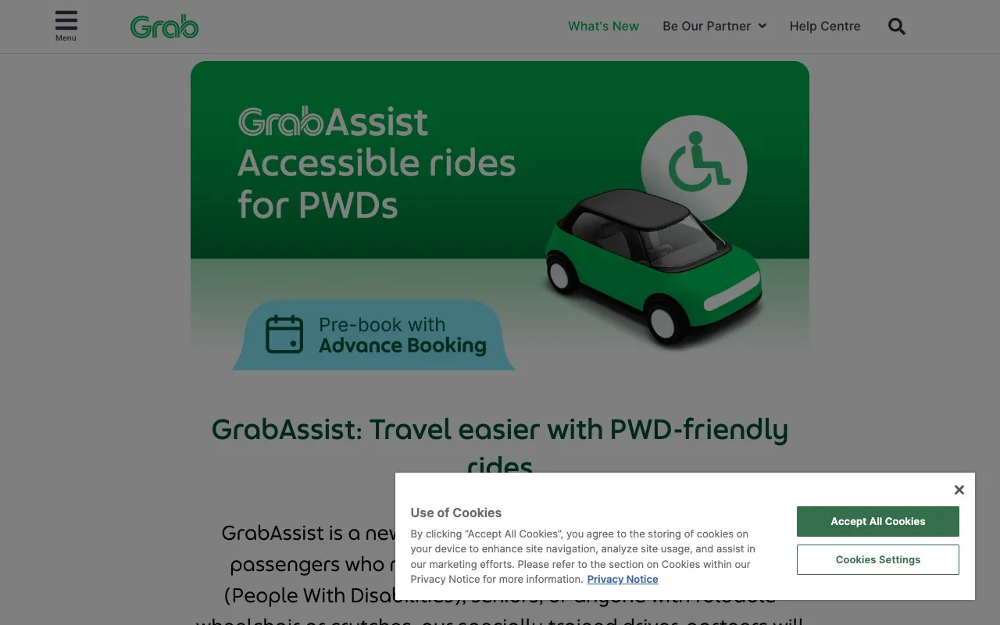
Why it ranks here. One headline, one button, the Grab brand behind it. A family already has the app.
Reads the limits and they are on the page in a box marked IMPORTANT: foldable chair only, driver stays in the car.
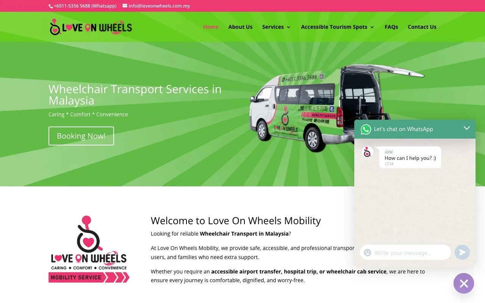
Why it ranks here. The h1 is the search phrase, the button says Booking Now and opens WhatsApp. Real van photography.
Template look, 0.228 layout shift, but it answers what and where before the fold and has pages underneath it.
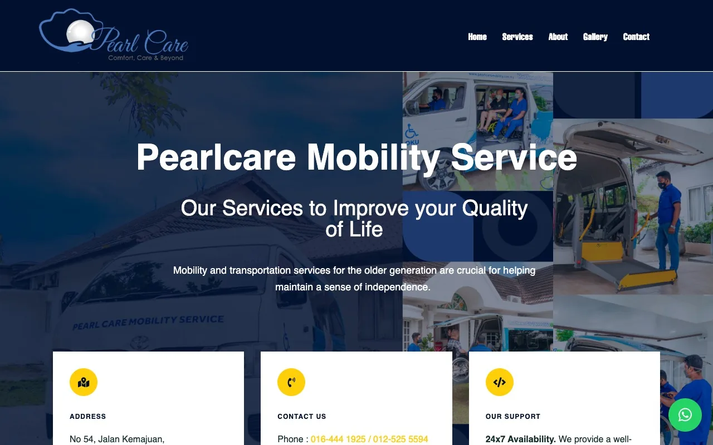
Why it ranks here. Says 24 x 7, names the two packages, publishes when to call for pickup. The operational honesty Jom Makcik lacks.
Dated build, no BM, no price, but the fastest first paint of the commercial set at 2.24 s.
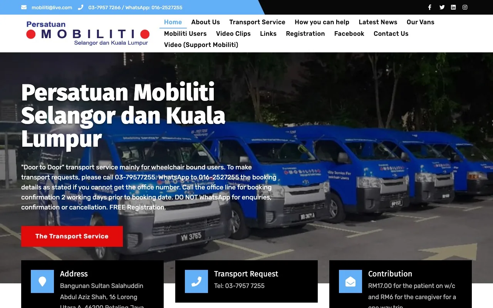
Why it ranks here. The only page on the board with a fare on it. RM17, RM6 per companion, a worked round trip at RM46.
Association site, phone booking, four working days notice. Fastest homepage in the category on no budget.
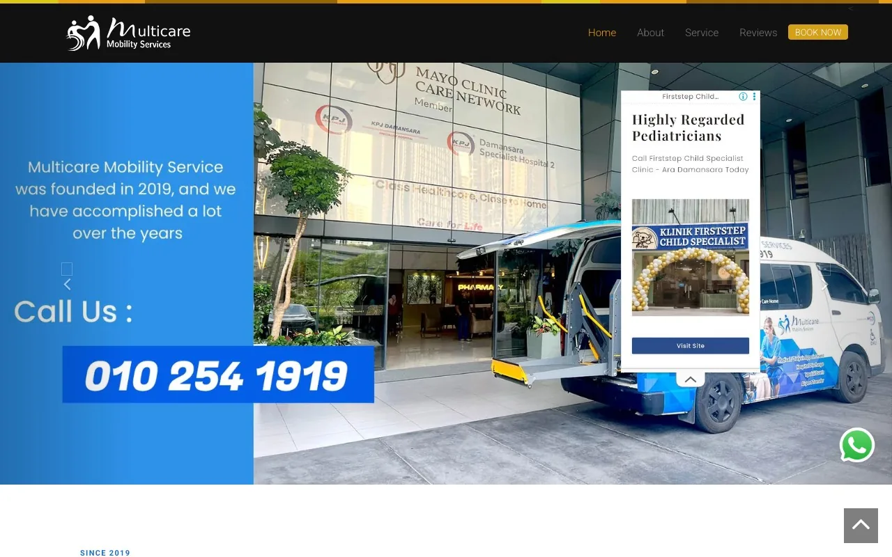
Why it ranks here. Three reviews with names and towns, a BOOK NOW button, driver plus assistant on every job.
Site builder template behind a bot wall. Same clinic donation credit as Love On Wheels, noted in part 06.
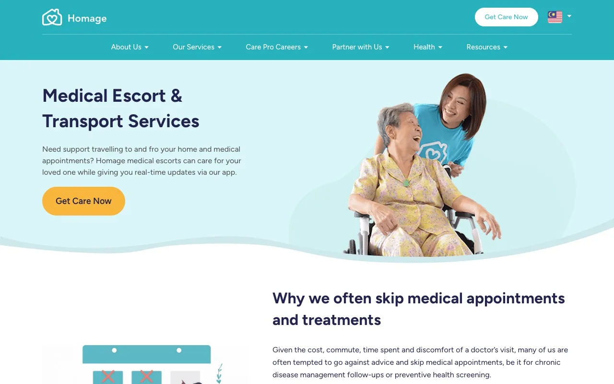
Why it ranks here. The best built page on the board: hourly price, seven listed inclusions, app download, Get Care Now.
Then the small print: the escort arranges a taxi. No vehicle, no ramp. Sells the half Jom Makcik sells, minus the van.
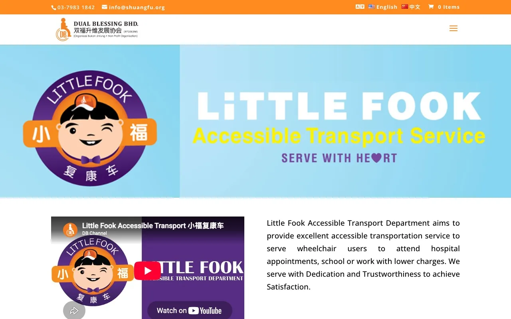
Why it ranks here. RM5 plus RM1.50 a kilometre, in the chair, WhatsApp booking, hours and surcharge all on one page.
Charity page inside a larger site. States plainly it does not provide a personal assistant.
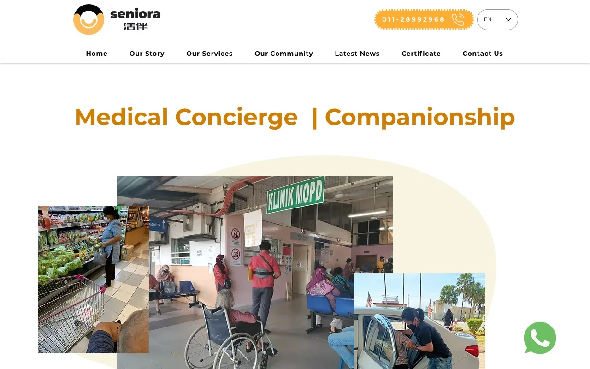
Why it ranks here. A rate table by area, minimum hours, toll and parking included, a Sunday surcharge. Everything a family needs to budget.
Northern and Johor operation. Not in the four areas today. The closest published model to the chaperone.
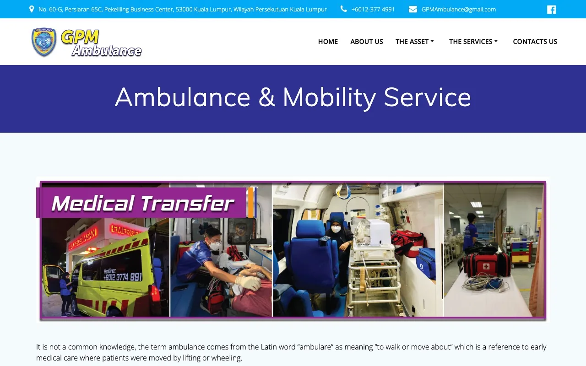
Why it ranks here. 24 hours, 7 days, nationwide transfers. The number a ward clerk has.
Ambulance branding, no lift or ramp detail, price on distance only.
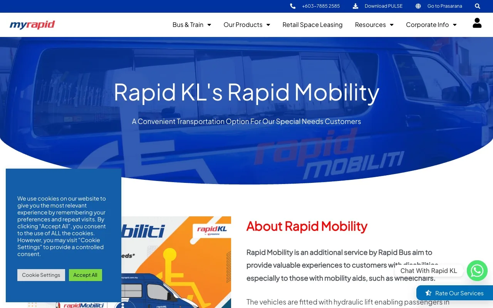
Why it ranks here. Hydraulic lift vans, door to door, nine named areas, a phone extension to book.
Weekdays 8.30 to 5 only. A public floor that a private operator has to be visibly better than.
Captured 9 and 10 September 2026. Quotes under "on their page" are read off the screenshot in part 02 or the live page text. No operator carries a rubric score here; the rank order carries the assessment, and every inference is labelled as ours.
Big brands with an app. They take the easy half of the market and set the expectation for how booking should feel.
Take the booking window language, 75 minutes to 90 days, and the flip card idea for communication. Quote their two limits on our homepage.
A partner today, an infrastructure competitor tomorrow if it follows Grab into assisted rides. Keep the relationship visible on the Partners page.
The direct field. Lift or ramp vehicles, WhatsApp booking, no published fare.
Take the one tap WhatsApp button and the search phrase as the h1. Then out write them: a page per service, per area, in two languages.
Take the two package naming and the pickup mechanic. Settle the hours and print one version.
Take the testimonial format: name, town, a sentence about the person. Nothing else worth taking.
Take the lesson that 24/7 is a sentence, not a fleet. If Jom Makcik cannot say it, say what it can: 24 hours notice, and an honest answer on weekends.
They set the price floor and the honesty bar. A family who has used them expects both.
Take the worked fare example. A round trip in RM, with the carer priced, is the most reassuring sentence on any page in this set.
Take the one page discipline: fare, hours, notice, surcharge, eligibility. Take the honesty of "we do not provide personal assistant" and answer it with "we do".
Take the named area list. Nine suburbs written out beats "Klang Valley". The Coverage page does this for four areas.
Background noise. One vehicle, one council. Listed so the board is complete.
They sell the person, not the van. They compete for the same monthly budget and they publish prices.
Take the seven listed inclusions and the from RM28 an hour pricing device. Then say the one thing they cannot: we bring the vehicle, and it has a ramp.
Take the rate table by area with toll and parking included and a Sunday surcharge. It is the most complete pricing page on the board, and it belongs to a company outside our four areas.
Stay in your own wheelchair. We walk you in. Six words the largest competitor has published that it cannot use. Placed where a comparison shopper reads first. Built.
Mobiliti's RM46 round trip example is the most reassuring sentence in the set. Jom Makcik's structure is built and shows On request until Dr Sazlina confirms figures. Being the first commercial operator to publish takes the position outright.
A page per service, a page per area, a FAQ marked up as schema, each titled with what a person types. One operator does this in English. Nobody does it in Malay.
Zero operators on this board explain a partner. Jom Makcik has PERKESO, JKM, Khazanah's foundation, four universities and two hospitals. One sentence each, on the homepage rail and a Partners page. Built, with the two agency sentences pending approval.
Multicare names its reviewers. Pearlcare states 24 x 7 and the pickup mechanic. Jom Makcik's three quotes are anonymous and its hours contradict its own app. Names, towns, and one version of the hours, everywhere.
| Attempted | Result |
|---|---|
| Multicare and Love On Wheels, same operation? | Both homepages carry an identical credit thanking Klinik Dr.Prevents 24 JAM PJ Old Town for a donation. Shared ownership, shared supplier or a coincidence could not be established. They are scored separately and the overlap is recorded here, not asserted. |
| Multicare measured speed | The site sits behind a Cloudflare bot challenge for scripted fetches. It rendered for a screenshot in a real browser but was not run on the throttled rig, so it carries no speed figures. |
| Rapid Mobility fares and eligibility | The page states the lift vans, the nine areas, the phone extension and the weekday hours. It does not state a fare or an OKU card requirement, and the FAQ link was not followed. Free or near free is an inference from the operator's public role, labelled as such. |
| Homage wheelchair handling | The escort page does not mention wheelchairs. "No vehicle" is stated on their page; "no ramp" follows from it and is ours. |
| GPM lift or ramp | Mobility Transport is described for "those who are wheelchair bound" with no vehicle detail. Whether the passenger stays seated is unknown. |
| Seniora coverage of the four areas | The rate table names KL and Selangor at RM50 an hour, but the operating centres listed are Taiping, Penang and Johor Bahru. Whether a KL booking is served locally or by a travelling companion could not be confirmed. |
| GrabAssist driver count today | Roughly 100 at launch, from the December 2025 press release. No later figure is published. |
| Jom Makcik's own 2026 numbers | The 600 drivers, 75% share and RM98,000 per AbiliCar are from Free Malaysia Today, January 2025. Current figures are the first question for Friday. |
| Follower counts and review volumes | Not pulled for any operator. Nothing in this document rests on them. |